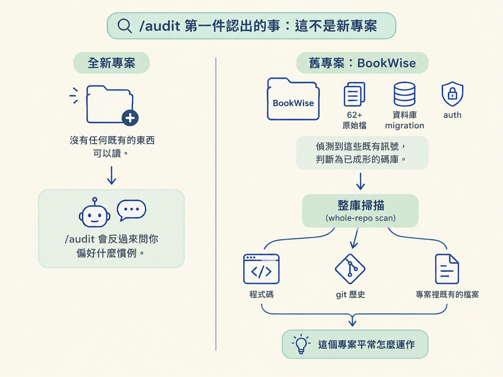
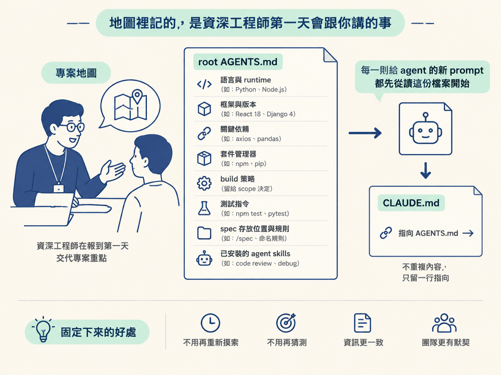
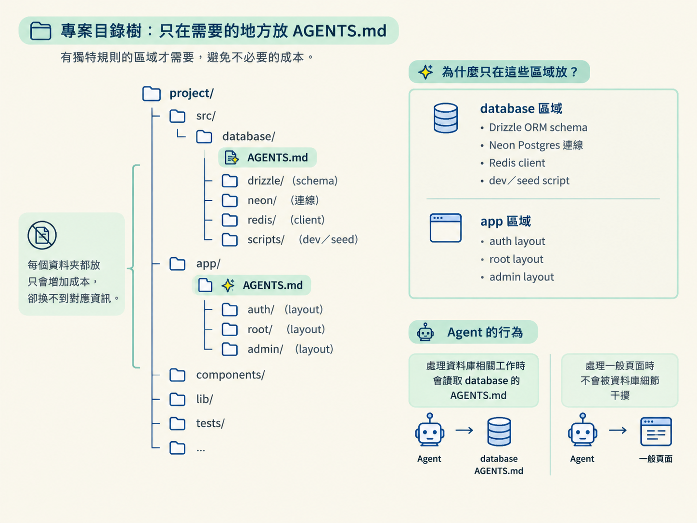

說出 /audit 在一個已成熟的舊專案上如何改成整庫掃描、寫出 root AGENTS.md 與 CLAUDE.md 指標、只在真正需要的區域放 nested 檔，並記下 stack、指令、慣例與新人第一天會被交代的細節。
上一節談到，agent 在舊碼庫上會失敗，核心原因是它手上沒有地圖：它讀得到程式碼「寫了什麼」，卻讀不出「為什麼存在」。所以它只能猜，而且常常猜得很乾淨、很自信，卻打破了專案依賴多年的規則。既然問題出在沒有地圖，第一件該做的事就很清楚了——不要急著叫 agent 改東西，先建出那張地圖。
課程的示範情境很寫實：有人把一個專案丢給你。它叫 BookWise，是一個大學圖書館應用，開發過程累積了一百四十次檔案變更，裡面有超過兩年的真實程式碼。也因為它這麼舊，當年根本還沒有 AGENTS.md 這種東西，整個專案是純手工寫出來的。你在這種專案上開一個新的 Claude Code 視窗，如果直接叫 agent 動工，等於讓它在一座陌生的城市裡不看地圖就開車。這一節要看的，就是 /audit 在這種專案上會做出什麼。
如果你在一個全新的專案上跑過 /audit，你看到的行為是它會反過來問你偏好什麼慣例，因為那時沒有任何既有的東西可以讀。但在這裡完全不是這樣。示範裡的 BookWise 已經有六十二個以上的原始檔、真的資料庫 migration、還有 auth，於是 audit 判斷它是一個已經成形的碼庫，直接改走另一條路：整庫掃描（whole-repo scan）。

它會去檢視三個來源：程式碼、git 歷史，以及專案裡既有的檔案。這三樣合起來，才足夠讓它說出「這個專案平常怎麼運作」，而不是只看見單一檔案長什麼樣。
# 在專案根目錄開一個新的 Claude Code 視窗 # 如果你的 skills 是全域安裝的，可以直接執行；否則要先裝 JSM 這套 skills /audit
這一步的重點不是指令本身，而是你要預期看到的路由結果：它不會問你慣例，而是開始讀檔。理解這一點，你才不會在它沉默地掃描時以為它卡住了。
整庫掃描不是單純把檔案讀一遍。audit 會讀到「足夠寫出 AGENTS.md」為止，但在動筆寫文件之前，它還做了兩件事：先檢查有沒有 agent skills 或 MCP 需要你同意的決定，並快速看一下 components、forms 以及幾個檔案裡的慣例。接著它會問你：要不要順便幫你把 agent skills 和 MCP servers 建起來？
這個專案當年純手工寫成，所以示範者直接說好。這裡有個值得學的手法：當你答應之後，audit 沒有把「探索 skill 與 MCP」塞進主要對話，而是開一個 sub-agent 去背景找，自己同時繼續寫地圖。這樣一來，你的主要對話裡最後只留下有用的結果，而不是它沿途打開過的每一個檔案。這正是你在 context 相關章節學過的取捨：把雜訊留給 sub-agent 自己的 context。
探索的結果，它認出這個專案用了 Next.js，配 Drizzle ORM、PostgreSQL／Neon、Tailwind 與 Zod，再加上 Auth.js／NextAuth v5 與 Upstash。它把相關的 agent skills 裝了進去，並建議可以接上 Neon、Upstash、ImageKit 三個 MCP servers。有趣的是，其中一個 Auth.js 的 skill 套件看起來只是普通文件，卻被 GenScanner 標成 critical risk，而另一個掃描器認為它只是 low risk。audit 沒有替你決定，而是把這個判斷留給你——示範者最後選擇移除它。這種「把風險判斷交回人類」的克制，是你可以信任它的原因之一。
map 寫完之後，內容讀起來就像一位資深工程師在你報到第一天會交代的東西：這個專案用什麼 stack、每天工作要跑哪些指令、程式碼遵循哪些模式，還有一些新人不講就會踩到的細節。root 的 AGENTS.md 會記錄語言與 runtime、帶明確版本的框架、關鍵依賴、套件管理器、build 策略（這裡留給 scope 決定）、測試指令、spec 存放的位置，以及整個碼庫遵循的規則；它也會列出裝好的 agent skills 和相關檔案。
為什麼 root 檔特別重要？因為之後你給 agent 的每一則新 prompt，都會從先讀這份檔案開始。它現在知道這個專案的語言、runtime、框架版本、關鍵依賴、套件管理器、測試指令、spec 位置與規則，這些都是過去每次對話都得重新摸索、甚至每次猜得不一樣的東西。旁邊的 CLAUDE.md 則不重複內容，只留一行指向 AGENTS.md 的指標。

一個區域如果真的有自己獨特的規則，audit 才會在靠近那段程式碼的地方再放一份 AGENTS.md。所謂「真的需要」，指的是它有不同於全域的慣例、有自己的指令、有外部整合，或是有重要的在地風險。它不會每個資料夾都放一份，因為那樣只會把成本加上去，卻沒有換到對應的資訊。在示範裡，她只在 database 與 app 兩個區域各放了一份。

這次是 /audit 第一次產出 nested 的 AGENTS.md。放在 database 的那份，記錄了 Drizzle ORM schema、Neon Postgres 連線、Redis client 以及 dev／seed script。其中 schema.ts 是整個資料模型的唯一真實來源，定義了 users、books、borrow records，並用 Postgres enum 表達 role、status、borrow status；drizzle.ts 與 redis.ts 負責建立執行期 client，供功能程式碼匯入；seed 則是一支獨立的開發腳本，不屬於 app 執行期。這份檔會指出關鍵檔案、它們各自負責什麼、可用的指令，以及慣例。
放在 app 的那份，談的主要是 layout：auth layout 管登入與註冊，另外還有 root layout、admin layout，以及另一個頁面，並把相關慣例一併記下。這樣安排的用意是：agent 只有在做資料庫相關的事時，才會去讀 database 那一份，處理一般頁面時不會被資料庫細節干擾。
同一個 skill 會隨專案型態調整：遇到 monorepo，它會建立一份簡短的 root 檔，再為每個 workspace 各放一份 agent 檔。但不管哪一種情況，底層的規則都相同——讀既有的內容，只補上缺少的，並保護別人已經寫好的東西。正是這份克制，讓一個團隊願意信任這張地圖，而不是每到有人重跑一次就擔心它被整份改寫。
走完這一輪，你就有能力在一個從沒打開過的專案上開始工作了：它現在有一張每個 skill 都讀得到的地圖，而地圖裡的 stack、指令、慣例與重要風險，都是從真實程式碼長出來、再由你檢查過的。這張地圖，正是讓整套 agentic engineering workflow 能在這裡安全跑起來的前提。
在已成熟的舊專案上，
/audit不會問你慣例，而是因為偵測到足夠的既有訊號（檔案數、migration、auth），改走整庫掃描。它讀程式碼、git 歷史與既有檔案，先把 agent skills 與 MCP 的探索交給背景 sub-agent，再寫出 rootAGENTS.md加一行CLAUDE.md指標，並只在真有獨特慣例的區域（示範中是database與app）放 nested 檔。root 記錄的，是資深工程師第一天會交代的事：stack、每日指令、程式碼模式與容易漏掉的細節。而貫穿所有專案型態的，是同一條原則：讀既有的、只補缺的、保護別人寫好的。
地圖有了，但要小心一件事：它是從證據推出來的一組判斷，不是不容質疑的真相。下一節要談的，就是動手之前，你該怎麼把這張地圖對著真實專案驗一遍。